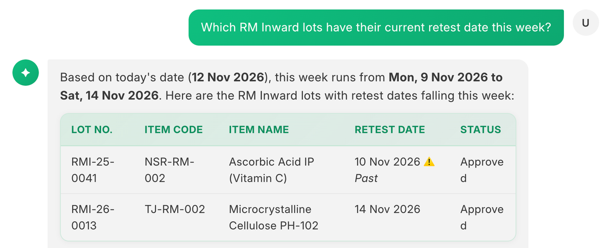

One-pager · 2026
What Stylo covers.
One login and one database for production, quality, stock, sales, people and money, with brAIn to answer any question across it.
Your whole plant,
on one record.
on one record.
Stylo Business · run the plant
Seven products, one database
Stylo BMS
Batch records, QC and CoA, deviations, CAPA and change control.
Stylo Inventory
Stock by lot, serial and expiry. FIFO enforced, recalls.
Stylo Finance
Books, GST returns, e-invoice, e-way bill and costing.
Stylo HRMS
Shifts, biometric attendance, payroll with TDS, PF and ESI.
Stylo CRM
Leads, quotes, dealers and WhatsApp follow-ups.
Stylo Projects
Project jobs, custom BOMs and job costing.
Stylo Retail
Store billing and direct-to-customer sales.
+ an audit trail on
every action ✓
every action ✓
Stylo Intelligence · ask the plant
brAInLive now
Ask in plain English. Answers come from live data, with the source.
Works with Stylo BMS, SAP B1, SAP HANA, Zoho and custom databases.
Read-only. Runs on your premises or private cloud.
Read-only. Runs on your premises or private cloud.
NEXT ON THE ROADMAP · STYLO MINI · STYLO PRO · AI OS · MODELS AND AGENTS

Built for
Pharma
Chemicals
FMCG and food
Engineering
Infra and EPC
Consulting
Three ways to start
You have an ERPKeep it. Add brAIn on top.
You have no ERPStylo and brAIn, from day one.
You want bothKeep yours, add the Stylo modules you're missing.
info@styloworld.io · styloworld.io · [+91 phone]
Sample data on screens